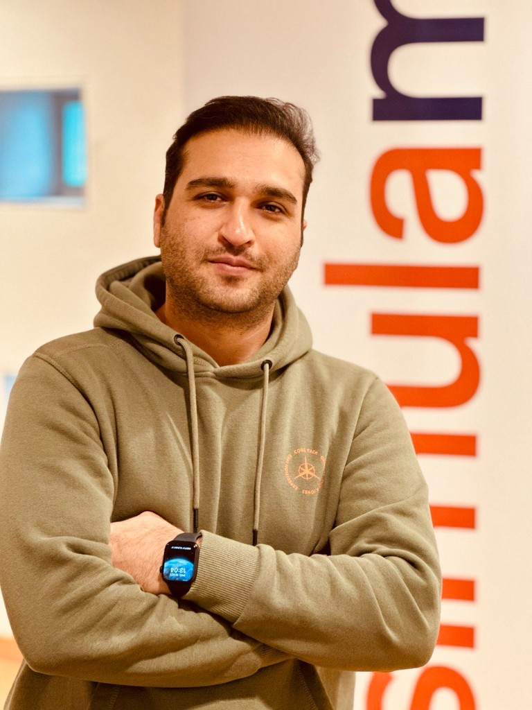

Building intelligent systems at the intersection of AI and software engineering — from production RAG architectures to real-time computer vision.

Software Engineer with 5+ years of experience building production AI systems, backend services, and optimization algorithms. My work spans conversational AI with RAG architectures, computer vision for sports video processing, and large-scale API development.
I hold a Master's degree in Applied Computer and Information Technology with an AI specialization from Oslo Metropolitan University, where my thesis on AI-based sports video cropping earned the top grade and produced peer-reviewed publications at IEEE and ACM conferences.
My background bridges Computer Science, Industrial Engineering, and Artificial Intelligence — allowing me to connect technical implementation with real-world problem solving.
Martin was born and raised in Esfahan, Iran, and moved to Norway in 2022 to pursue a Master's in Computer Science/AI. He joined Allente and bought an apartment in Oppsal. After Allente was acquired by ViaPlay, the company underwent significant downsizing and over half of the technical staff were made redundant, including Martin. To continue living in Norway—which matters greatly to him—he is looking for a new role. He uses Norwegian in daily life and is learning quickly, with a goal of speaking fluently by summer. He prefers roles in or near Oslo but is open to relocating elsewhere in Norway.
End-to-end system for automatic cropping of sports videos (soccer and ice hockey) for social media. Fine-tuned YOLOv8/v9 and RT-DETR for real-time focal point detection. Built a Flask GUI with interpolation, outlier controls, and platform-specific aspect ratios. Resulted in 6 publications, 80+ citations, and a Best Paper Award nomination at ACM MMSys 2024.
Production chatbot serving 4 Nordic countries. Spring Boot + GPT-4o + pgvector for semantic search over HR documents via SharePoint/Microsoft Graph API. Admin panel for document management.
Subscription data sync across 6+ streaming platforms — Amazon Prime, Viaplay, TV2 Play — handling user provisioning, entitlements, and real-time status.
Metaheuristic optimization for routing emergency responders in earthquake scenarios. Mathematical models balancing response time, resource allocation, and coverage.
I'm currently exploring new opportunities in software engineering and AI. If you're working on something interesting, I'd love to hear about it.